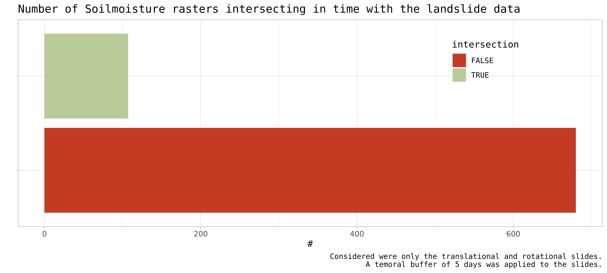

extract_soil_moisture_data.Rmdget_sm_data do?The idea of this function is to extract the soilmoisture data from a large stack of reprojected, cropped, resampled and compressed GeoTIFFs.
Only Landslides with a known date are considered
The date of the landslide, plus some days ( as specified in days_before_window) and minus (days_after_window) are then compared to the available dates of the soilmoisture-“acquisitions”
The spatial object for which to extract the values can either be
When we are using only points (e.g. landslide initiation points) one only needs to call for example
The extraction here is done using the st_extract-method for stars objects which extracts values at point locations for stars-objects
res = get_sm_data(<path_to_soilmoisture_data>,
landsld = <landslide-object>)This will use the default values for some of the parameters:
+ days_before_window = 5,
+ days_after_window = 0,
+ point_buffer = NULL,
+ aggre_fun = NULLThis mean that we look 5 days before the landslide (or any other point like object) if we find soilmoisture information
When you want to use a buffer around your point you can specify this in the point_buffer-parameter
You directly pass the distance in units of your landsld-object. As we are mainly working in EPSG: 32632 this should be meters
As we are now working with a polygon, we can pass a vector with aggregation functions to the aggre_fun-parameter. If nothing is passed you will get back the values for all intersection cells. Look into the documentation of exactextracr to know how this works in detail.
res = get_sm_data(<path_to_soilmoisture_data>,
landsld = <landslide-object>,
point_buffer = 300,
aggre_fun = c("mean"))iffitoR-package and subset it to only some movements of interest
data = landsld[grepl("translational|rotational", landsld$second_level), ]
dim(data)
#> [1] 2315 18date in order to see what happens
copy = data.frame(data) %>% st_as_sf()
copy[["date"]] = NULL # remove the date columnget_sm_data-function on that dataframe
res = get_sm_data(
landsld = copy,
path_sm = path_sm
)
#> Error in check_date(landsld): There is no column called date in the landsld objectIt does not work as the dataframe really needs to have a column called date
Now lets use the original data to get the soilmoisture data
path_sm = "/mnt/CEPH_PROJECTS/Proslide/soilmoisture/32632/"
data = data[1:50, ]
res = (get_sm_data(
landsld = data,
path_sm = path_sm
)) So now we extracted the values of the soilmoisture rasters at pixel location of each slide.
We considered the date of the slide as well as 5 anterior days
The result is stored as a list in the dataframe that the function get_sm_datareturns. The list-column is called sm_values.
And its all still a spatial dataframe of class sf
#> Rows: 26
#> Columns: 5
#> $ date <date> 2014-02-11, 2013-10-31, 1998-06-08, 1993-04-30, 1959-12…
#> $ PIFF_ID <dbl> 60300, 140200, 230100, 310100, 370100, 371700, 420100, 4…
#> $ second_level <chr> "rotational slide", "rotational slide", "rotational slid…
#> $ sm_values <list> [NA, NA, NA, NA, NA, <data.frame[4 x 5]>, NA, NA, NA, N…
#> $ geometry <POINT [m]> POINT (671300.8 5123189), POINT (722251.5 5190727)…Lets check for how much landslide data we also have soilmoisture data
Remember: That even if we have intersecting days, it still is very probable that the lanslide-point overlays with a NA-value in the soilmoisture raster.
# add fonts
library(showtext)
#> Loading required package: sysfonts
#> Loading required package: showtextdb
library(ggtext)
# where does the package look for fonts?
font_paths()
#> [1] "/usr/local/share/fonts"
#> [2] "/usr/share/fonts"
#> [3] "/usr/share/fonts/cmap"
#> [4] "/usr/share/fonts/cMap"
#> [5] "/usr/share/fonts/cmap/adobe-cns1"
#> [6] "/usr/share/fonts/cmap/adobe-gb1"
#> [7] "/usr/share/fonts/cmap/adobe-japan1"
#> [8] "/usr/share/fonts/cmap/adobe-japan2"
#> [9] "/usr/share/fonts/cmap/adobe-korea1"
#> [10] "/usr/share/fonts/truetype"
#> [11] "/usr/share/fonts/truetype/dejavu"
#> [12] "/usr/share/fonts/truetype/lato"
#> [13] "/usr/share/fonts/truetype/lyx"
#> [14] "/usr/share/fonts/truetype/ttf-bitstream-vera"
#> [15] "/usr/share/fonts/X11"
#> [16] "/usr/share/fonts/X11/encodings"
#> [17] "/usr/share/fonts/X11/encodings/large"
#> [18] "/usr/share/fonts/X11/misc"
#> [19] "/usr/share/fonts/X11/Type1"
#> [20] "/usr/share/fonts/X11/util"
# show local fonts
font_files()
#> path file
#> 1 /usr/share/fonts/truetype/dejavu DejaVuSans-Bold.ttf
#> 2 /usr/share/fonts/truetype/dejavu DejaVuSans.ttf
#> 3 /usr/share/fonts/truetype/dejavu DejaVuSansMono-Bold.ttf
#> 4 /usr/share/fonts/truetype/dejavu DejaVuSansMono.ttf
#> 5 /usr/share/fonts/truetype/dejavu DejaVuSerif-Bold.ttf
#> 6 /usr/share/fonts/truetype/dejavu DejaVuSerif.ttf
#> 7 /usr/share/fonts/truetype/lato Lato-Black.ttf
#> 8 /usr/share/fonts/truetype/lato Lato-BlackItalic.ttf
#> 9 /usr/share/fonts/truetype/lato Lato-Bold.ttf
#> 10 /usr/share/fonts/truetype/lato Lato-BoldItalic.ttf
#> 11 /usr/share/fonts/truetype/lato Lato-Hairline.ttf
#> 12 /usr/share/fonts/truetype/lato Lato-HairlineItalic.ttf
#> 13 /usr/share/fonts/truetype/lato Lato-Heavy.ttf
#> 14 /usr/share/fonts/truetype/lato Lato-HeavyItalic.ttf
#> 15 /usr/share/fonts/truetype/lato Lato-Italic.ttf
#> 16 /usr/share/fonts/truetype/lato Lato-Light.ttf
#> 17 /usr/share/fonts/truetype/lato Lato-LightItalic.ttf
#> 18 /usr/share/fonts/truetype/lato Lato-Medium.ttf
#> 19 /usr/share/fonts/truetype/lato Lato-MediumItalic.ttf
#> 20 /usr/share/fonts/truetype/lato Lato-Regular.ttf
#> 21 /usr/share/fonts/truetype/lato Lato-Semibold.ttf
#> 22 /usr/share/fonts/truetype/lato Lato-SemiboldItalic.ttf
#> 23 /usr/share/fonts/truetype/lato Lato-Thin.ttf
#> 24 /usr/share/fonts/truetype/lato Lato-ThinItalic.ttf
#> 25 /usr/share/fonts/truetype/lyx cmex10.ttf
#> 26 /usr/share/fonts/truetype/lyx cmmi10.ttf
#> 27 /usr/share/fonts/truetype/lyx cmr10.ttf
#> 28 /usr/share/fonts/truetype/lyx cmsy10.ttf
#> 29 /usr/share/fonts/truetype/lyx esint10.ttf
#> 30 /usr/share/fonts/truetype/lyx eufm10.ttf
#> 31 /usr/share/fonts/truetype/lyx msam10.ttf
#> 32 /usr/share/fonts/truetype/lyx msbm10.ttf
#> 33 /usr/share/fonts/truetype/lyx rsfs10.ttf
#> 34 /usr/share/fonts/truetype/lyx stmary10.ttf
#> 35 /usr/share/fonts/truetype/lyx wasy10.ttf
#> 36 /usr/share/fonts/truetype/ttf-bitstream-vera Vera.ttf
#> 37 /usr/share/fonts/truetype/ttf-bitstream-vera VeraBd.ttf
#> 38 /usr/share/fonts/truetype/ttf-bitstream-vera VeraBI.ttf
#> 39 /usr/share/fonts/truetype/ttf-bitstream-vera VeraIt.ttf
#> 40 /usr/share/fonts/truetype/ttf-bitstream-vera VeraMoBd.ttf
#> 41 /usr/share/fonts/truetype/ttf-bitstream-vera VeraMoBI.ttf
#> 42 /usr/share/fonts/truetype/ttf-bitstream-vera VeraMoIt.ttf
#> 43 /usr/share/fonts/truetype/ttf-bitstream-vera VeraMono.ttf
#> 44 /usr/share/fonts/truetype/ttf-bitstream-vera VeraSe.ttf
#> 45 /usr/share/fonts/truetype/ttf-bitstream-vera VeraSeBd.ttf
#> family face version
#> 1 DejaVu Sans Bold Version 2.37
#> 2 DejaVu Sans Book Version 2.37
#> 3 DejaVu Sans Mono Bold Version 2.37
#> 4 DejaVu Sans Mono Book Version 2.37
#> 5 DejaVu Serif Bold Version 2.37
#> 6 DejaVu Serif Book Version 2.37
#> 7 Lato Black Regular Version 2.007; 2014-02-27
#> 8 Lato Black Italic Version 2.007; 2014-02-27
#> 9 Lato Bold Version 2.007; 2014-02-27
#> 10 Lato Bold Italic Version 2.007; 2014-02-27
#> 11 Lato Hairline Regular Version 2.007; 2014-02-27
#> 12 Lato Hairline Italic Version 2.007; 2014-02-27
#> 13 Lato Heavy Regular Version 2.007; 2014-02-27
#> 14 Lato Heavy Italic Version 2.007; 2014-02-27
#> 15 Lato Italic Version 2.007; 2014-02-27
#> 16 Lato Light Regular Version 2.007; 2014-02-27
#> 17 Lato Light Italic Version 2.007; 2014-02-27
#> 18 Lato Medium Regular Version 2.006; 2014-01-15
#> 19 Lato Medium Italic Version 2.006; 2014-01-15
#> 20 Lato Regular Version 2.007; 2014-02-27
#> 21 Lato Semibold Regular Version 2.006; 2014-01-15
#> 22 Lato Semibold Italic Version 2.006; 2014-01-15
#> 23 Lato Thin Regular Version 2.007; 2014-02-27
#> 24 Lato Thin Italic Version 2.007; 2014-02-27
#> 25 cmex10 LyX 1.1/12-Nov-94
#> 26 cmmi10 LyX 1.1/12-Nov-94
#> 27 cmr10 LyX 1.1/12-Nov-94
#> 28 cmsy10 LyX 1.1/12-Nov-94
#> 29 esint10 LyX Version 001.001
#> 30 eufm10 LyX 1.2/19-Jan-95
#> 31 msam10 LyX 1.2/19-Jan-95
#> 32 msbm10 LyX 1.2/19-Jan-95
#> 33 rsfs10 LyX Version 001.001
#> 34 stmary10 LyX Version 001.001
#> 35 wasy10 LyX Version 001.002
#> 36 Bitstream Vera Sans Roman Release 1.10
#> 37 Bitstream Vera Sans Bold Release 1.10
#> 38 Bitstream Vera Sans Bold Oblique Release 1.10
#> 39 Bitstream Vera Sans Oblique Release 1.10
#> 40 Bitstream Vera Sans Mono Bold Release 1.10
#> 41 Bitstream Vera Sans Mono Bold Oblique Release 1.10
#> 42 Bitstream Vera Sans Mono Oblique Release 1.10
#> 43 Bitstream Vera Sans Mono Roman Release 1.10
#> 44 Bitstream Vera Serif Roman Release 1.10
#> 45 Bitstream Vera Serif Bold Release 1.10
#> ps_name
#> 1 DejaVuSans-Bold
#> 2 DejaVuSans
#> 3 DejaVuSansMono-Bold
#> 4 DejaVuSansMono
#> 5 DejaVuSerif-Bold
#> 6 DejaVuSerif
#> 7 Lato-Black
#> 8 Lato-BlackItalic
#> 9 Lato-Bold
#> 10 Lato-BoldItalic
#> 11 Lato-Hairline
#> 12 Lato-HairlineItalic
#> 13 Lato-Heavy
#> 14 Lato-HeavyItalic
#> 15 Lato-Italic
#> 16 Lato-Light
#> 17 Lato-LightItalic
#> 18 Lato-Medium
#> 19 Lato-MediumItalic
#> 20 Lato-Regular
#> 21 Lato-Semibold
#> 22 Lato-SemiboldItalic
#> 23 Lato-Thin
#> 24 Lato-ThinItalic
#> 25 cmex10
#> 26 cmmi10
#> 27 cmr10
#> 28 cmsy10
#> 29 esint10
#> 30 eufm10
#> 31 msam10
#> 32 msbm10
#> 33 rsfs10
#> 34 stmary10
#> 35 wasy10
#> 36 BitstreamVeraSans-Roman
#> 37 BitstreamVeraSans-Bold
#> 38 BitstreamVeraSans-BoldOblique
#> 39 BitstreamVeraSans-Oblique
#> 40 BitstreamVeraSansMono-Bold
#> 41 BitstreamVeraSansMono-BoldOb
#> 42 BitstreamVeraSansMono-Oblique
#> 43 BitstreamVeraSansMono-Roman
#> 44 BitstreamVeraSerif-Roman
#> 45 BitstreamVeraSerif-Bold
# add the font by providing the family and the name of the truetypefont (.ttf)
font_add(family = "DejaVu Serif", regular = "DejaVuSerif-Bold.ttf")
# create color scale for true and false
pal = c("TRUE" = "#b9cb99", "FALSE" = "#dda982")
res %>%
mutate(
intersection = case_when(
is.na(sm_values) ~ FALSE,
TRUE ~ TRUE
)
) %>%
count(intersection) %>%
ggplot() +
geom_col(
aes(
x = n,
y = intersection,
fill = intersection
)
) +
scale_fill_manual(values = pal) +
theme_light() +
labs(
y = "",
x = "#",
title = "Number of Soilmoisture rasters intersecting in time with the landslide data"
) +
theme(
legend.position = c(0.8,0.8),
title = element_text(family = "mono"),
legend.text = element_text(family = "mono"),
legend.background = element_blank(),
axis.text.y = element_blank()
)